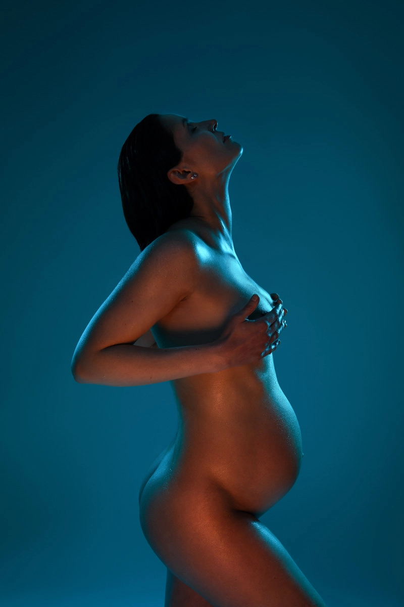

Ca y est la bonne nouvelle est arrivée, vous allez devenir bientôt maman. Vous allez au fil des mois, commencer à sentir ce petit être grandir dans votre ventre, vous allez le câliner, lui parler, le rassurer et l’aimer un peu plus chaque jours jusqu’à enfin pouvoir le/la tenir dans vos bras et l’admirer Offrez-vous une jolie séance photo Grossesse pour immortaliser votre bidou tout rond Une séance photo Maternité, c’est se souvenir de ses jolies formes.
Grossesse

GROSSESSE
Je suis à chaque fois très touchée
qu’une future maman m’accorde sa confiance
Qui a t’il de plus beau que donner la vie
Immortaliser ce moment si important dans votre vie à vous mais aussi de votre couple. Offrez vous et offrez lui, de magnifiques souvenirs avant sa naissance, que vous pourrez revivre ensemble quand il/elle sera plus grand(e).
Une séance photo toute seule, en couple, avec toute la famille
Durant la séance photo, je fais des photos avec votre compagnon, un petit moment dans votre petite bulle d’amour où vous profiter de vous retrouver, de vous regarder, de vous dire des mots tout mignon, de vous serrer dans les bras … Je ferai également des photos de vous toute seule ainsi que des photos de la fratries s’il y a des frères et soeurs.
Vivez une expérience unique
La maternité est une expérience extra-ordinaire… Neuf mois d’attente qu’il est important d’immortaliser dans le
moindre détail. De la chambre du bébé à votre main posée délicatement sur votre ventre rond, gardez un souvenir
précieux de cette aventure éphémère avant que bébé ne vienne chambouler votre vie.
Le reportage maternité peut se dérouler chez vous, ou en extérieur si le temps le permet.
Gardez également de belles images des premiers instants de vie de votre bébé aux creux de vos bras et dans son nouveau cocon.

